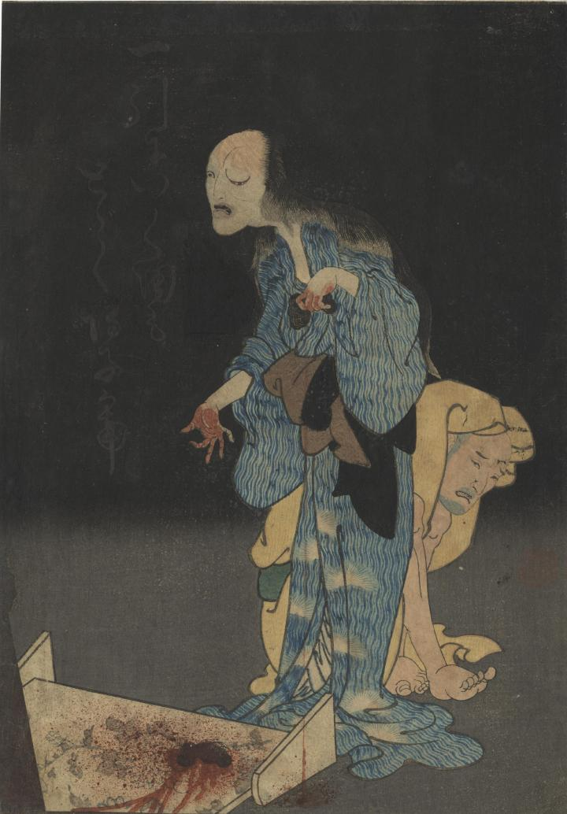

お岩が毒を盛った宅悦の背後に立っている。お岩の顔はひどい顔となり、抜けた髪からは血が落ちている。
著作者：広貞／出典：親書誌：U426_nichibunken_0375：お岩の亡霊；オイワ ノ ボウレイ／日付：2014／資源識別子：U426_nichibunken_0375_0001_0000
Copyright (c)2010- International Research Center for Japanese Studies, Kyoto, Japan. All rights reserved.